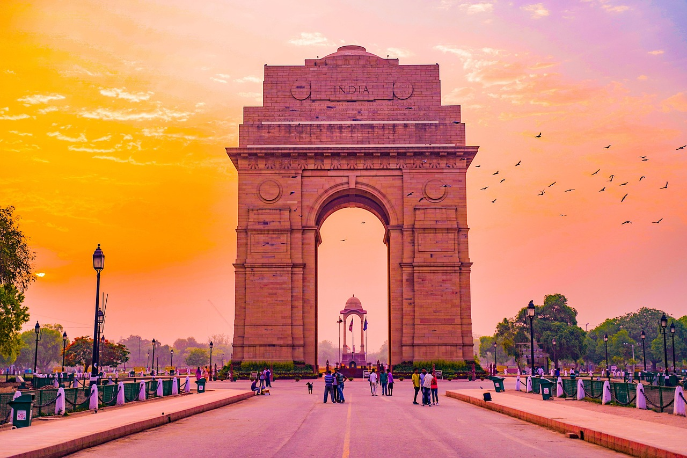

Delhi, the capital city of India, is a vibrant blend of history, culture, and modern development. It is home to iconic landmarks such as the Red Fort, Qutub Minar, and India Gate, which reflect its rich heritage. The city is divided into Old Delhi, with its bustling bazaars and narrow lanes, and New Delhi, designed with wide roads, government buildings, and modern infrastructure. Delhi is also a spiritual hub, housing famous temples, mosques, and gurudwaras that showcase India’s religious diversity. Known for its street food, festivals, and colorful markets, Delhi offers a lively experience that captures the essence of India’s past and present in one place.Delhi, the bustling capital of India, is a city where history and modernity coexist side by side. It is home to magnificent monuments like the Red Fort, Humayun’s Tomb, and Qutub Minar, which reflect centuries of Mughal and Sultanate rule. The wide boulevards and government buildings of New Delhi showcase British colonial architecture, while Old Delhi’s narrow lanes and bazaars bring alive the charm of traditional India. The city is also a spiritual center, with landmarks such as Jama Masjid, Akshardham Temple, and Lotus Temple representing diverse faiths. Delhi’s vibrant street food culture, from spicy chaat to butter-laden parathas, is a delight for food lovers. Festivals like Diwali, Holi, and Eid are celebrated with grandeur, adding color and energy to everyday life. The city is a hub for politics, education, and commerce, making it one of the most influential regions in the country. Bustling markets like Chandni Chowk and Connaught Place offer everything from traditional crafts to modern fashion. Delhi also serves as a gateway to northern India, with easy access to destinations like Agra and Jaipur. Altogether, Delhi is a city of contrasts—where ancient heritage, cultural diversity, and modern aspirations come together to create a truly dynamic urban experience.
